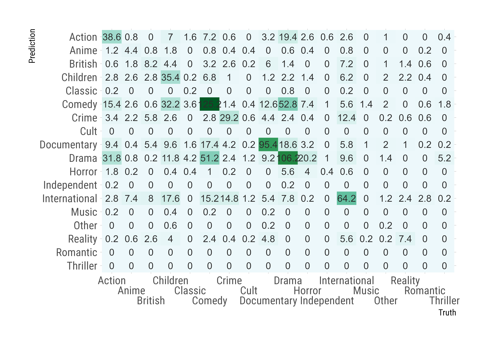

Netflix Titles NLP
Jim Gruman
April 20, 2021
Last updated: 2021-05-10
Checks: 7 0
Knit directory: myTidyTuesday/
This reproducible R Markdown analysis was created with workflowr (version 1.6.2). The Checks tab describes the reproducibility checks that were applied when the results were created. The Past versions tab lists the development history.
Great! Since the R Markdown file has been committed to the Git repository, you know the exact version of the code that produced these results.
Great job! The global environment was empty. Objects defined in the global environment can affect the analysis in your R Markdown file in unknown ways. For reproduciblity it’s best to always run the code in an empty environment.
The command set.seed(20200907) was run prior to running the code in the R Markdown file. Setting a seed ensures that any results that rely on randomness, e.g. subsampling or permutations, are reproducible.
Great job! Recording the operating system, R version, and package versions is critical for reproducibility.
Nice! There were no cached chunks for this analysis, so you can be confident that you successfully produced the results during this run.
Great job! Using relative paths to the files within your workflowr project makes it easier to run your code on other machines.
Great! You are using Git for version control. Tracking code development and connecting the code version to the results is critical for reproducibility.
The results in this page were generated with repository version aeb6ceb. See the Past versions tab to see a history of the changes made to the R Markdown and HTML files.
Note that you need to be careful to ensure that all relevant files for the analysis have been committed to Git prior to generating the results (you can use wflow_publish or wflow_git_commit). workflowr only checks the R Markdown file, but you know if there are other scripts or data files that it depends on. Below is the status of the Git repository when the results were generated:
Ignored files:
Ignored: .Rhistory
Ignored: .Rproj.user/
Ignored: analysis/rsconnect/
Ignored: data/03/
Ignored: data/lab_51_torch_tabnet/
Ignored: fonts/
Ignored: rosm.cache/
Untracked files:
Untracked: analysis/.vscode/
Unstaged changes:
Modified: analysis/BackboneWatershed.Rmd
Note that any generated files, e.g. HTML, png, CSS, etc., are not included in this status report because it is ok for generated content to have uncommitted changes.
These are the previous versions of the repository in which changes were made to the R Markdown (analysis/2021_04_20.Rmd) and HTML (docs/2021_04_20.html) files. If you’ve configured a remote Git repository (see ?wflow_git_remote), click on the hyperlinks in the table below to view the files as they were in that past version.
| File | Version | Author | Date | Message |
|---|---|---|---|---|
| Rmd | aeb6ceb | opus1993 | 2021-05-10 | wflow_publish(“analysis/2021_04_20.Rmd”) |
| html | be4bfd3 | opus1993 | 2021-05-10 | Build site. |
| Rmd | a457430 | opus1993 | 2021-05-10 | wflow_publish(“analysis/2021_04_20.Rmd”) |
| html | ef56748 | opus1993 | 2021-05-10 | Build site. |
| Rmd | 243dce9 | opus1993 | 2021-05-10 | wflow_publish(“analysis/2021_04_20.Rmd”) |
| html | 44475f8 | opus1993 | 2021-05-10 | Build site. |
| Rmd | 4029448 | opus1993 | 2021-05-10 | wflow_publish(“analysis/2021_04_20.Rmd”) |
| html | 4b0720e | opus1993 | 2021-05-07 | Build site. |
| Rmd | 5bbcff4 | opus1993 | 2021-05-07 | wflow_publish(“analysis/2021_04_20.Rmd”) |
| html | 754005b | opus1993 | 2021-05-07 | Build site. |
| Rmd | 1ea4376 | opus1993 | 2021-05-07 | wflow_publish(“analysis/2021_04_20.Rmd”) |
| html | 0df4310 | opus1993 | 2021-05-07 | Build site. |
| Rmd | f6ff808 | opus1993 | 2021-05-07 | wflow_publish(“analysis/2021_04_20.Rmd”) |
| html | 39a5603 | opus1993 | 2021-05-07 | Build site. |
| Rmd | 19e2512 | opus1993 | 2021-05-07 | wflow_publish(“analysis/2021_04_20.Rmd”) |
knitr::include_graphics("assets/netflix.png", error = FALSE)
The #TidyTuesday data this week is Netflix’s streaming catalog titles with descriptions, genre classifications, actors, directors, dates, and other metadata.
Introduction
First, I want to acknowledge that I benefited from the guidance and work of the following:
David Robinson’s Youtube screencast and code at the repo here.
Julia Silge’s Which #TidyTuesday Netflix titles are movies and which are TV shows?
Mark H White, PhD’s blog post EXPLORING THE STAR WARS “PREQUEL RENAISSANCE” USING TIDYMODELS AND WORKFLOWSETS
Max Kuhn and Julia Silge’s in-progres book Tidy Modeling With R Chapter 15: Screening Many Models
My goal is to explore and classify using the tidymodels framework and workflowsets to predict the genre of the titles on the streaming services. Dr. Silge hinted in her broadcast that a multi-class prediction would be possible with a neural net. Let’s explore that path.
First, let’s load libraries and set a ggplot theme:
knitr::opts_chunk$set(
echo = TRUE,
message = FALSE,
warning = FALSE,
cache = FALSE,
cache.lazy = FALSE,
df_print = "paged",
dpi = 300,
tidy = "styler",
dev = "ragg_png",
autodep = TRUE
)
suppressPackageStartupMessages({
library(tidyverse)
library(lubridate)
library(hrbrthemes)
library(tidytext)
library(tidymodels)
library(themis)
library(textrecipes)
library(discrim)
library(finetune)
library(workflowsets)
library(doParallel)
})
update_geom_font_defaults(font_rc_light)
ggplot2::theme_set(hrbrthemes::theme_ipsum_rc() +
ggplot2::theme(plot.title.position = "plot",
plot.caption.position = "plot"))Let’s load the data and clean up the duration movie field and date_added fields.
netflix_titles <-
tidytuesdayR::tt_load("2021-04-20")$netflix_titles %>%
separate(duration,
c("duration", "duration_units"),
sep = " ",
convert = TRUE
) %>%
mutate(
date_added = mdy(date_added),
year_added = year(date_added)
)
Downloading file 1 of 1: `netflix_titles.csv`Exploration
Skimming
The dataset includes 7,787 titles, both as movies and TV shows. Other summary details of the dataset, as provided by skimr
skimr::skim(netflix_titles)| Name | netflix_titles |
| Number of rows | 7787 |
| Number of columns | 14 |
| _______________________ | |
| Column type frequency: | |
| character | 10 |
| Date | 1 |
| numeric | 3 |
| ________________________ | |
| Group variables | None |
Variable type: character
| skim_variable | n_missing | complete_rate | min | max | empty | n_unique | whitespace |
|---|---|---|---|---|---|---|---|
| show_id | 0 | 1.00 | 2 | 5 | 0 | 7787 | 0 |
| type | 0 | 1.00 | 5 | 7 | 0 | 2 | 0 |
| title | 0 | 1.00 | 1 | 104 | 0 | 7787 | 0 |
| director | 2389 | 0.69 | 2 | 208 | 0 | 4049 | 0 |
| cast | 718 | 0.91 | 3 | 771 | 0 | 6831 | 0 |
| country | 507 | 0.93 | 4 | 123 | 0 | 681 | 0 |
| rating | 7 | 1.00 | 1 | 8 | 0 | 14 | 0 |
| duration_units | 0 | 1.00 | 3 | 7 | 0 | 3 | 0 |
| listed_in | 0 | 1.00 | 6 | 79 | 0 | 492 | 0 |
| description | 0 | 1.00 | 61 | 248 | 0 | 7769 | 0 |
Variable type: Date
| skim_variable | n_missing | complete_rate | min | max | median | n_unique |
|---|---|---|---|---|---|---|
| date_added | 10 | 1 | 2008-01-01 | 2021-01-16 | 2019-03-08 | 1512 |
Variable type: numeric
| skim_variable | n_missing | complete_rate | mean | sd | p0 | p25 | p50 | p75 | p100 | hist |
|---|---|---|---|---|---|---|---|---|---|---|
| release_year | 0 | 1 | 2013.93 | 8.76 | 1925 | 2013 | 2017 | 2018 | 2021 | ▁▁▁▁▇ |
| duration | 0 | 1 | 69.12 | 50.95 | 1 | 2 | 88 | 106 | 312 | ▆▇▂▁▁ |
| year_added | 10 | 1 | 2018.49 | 1.39 | 2008 | 2018 | 2019 | 2020 | 2021 | ▁▁▁▆▇ |
Genres
The listed_in character field associates individual titles with one or more genres. When separated out, the count of titles in each genre includes:
netflix_titles %>%
separate_rows(listed_in, sep = ", ") %>%
count(listed_in)Film Duration
Let’s take a quick peek at the median time duration of only the movies for each genre. Note again that the same title can often be counted in more than one genre grouping.
netflix_titles %>%
separate_rows(listed_in, sep = ", ") %>%
group_by(type, genre = listed_in) %>%
summarize(
n = n(),
median_duration = median(duration),
.groups = "drop"
) %>%
mutate(genre = glue::glue("{ genre } ({ n })")) %>%
filter(type == "Movie") %>%
filter(genre != "Movies") %>%
mutate(genre = fct_reorder(genre, median_duration)) %>%
ggplot(aes(median_duration, genre)) +
geom_col(fill = "red", show.legend = FALSE) +
geom_text(
aes(
x = median_duration - 3,
label = median_duration
),
color = "white"
) +
labs(
x = "Media Streaming Netflix Movie Duration (Minutes)",
y = NULL
)
The median of Netflix titles labeled as Documentaries and Stand-Up Comedy movies are shorter in duration than Dramas and Classic Movies.
Feature Engineering
Given the description, cast members, director, and release_year, can we build a useful model to predict the genre?
Unbalanced multi-class problems are especially challenging. And in the Netflix dataset, most movies belong to two or three genres at the same time. To make this problem just a little less complex, we will bundle some genre’s into logical groupings. I am also only using the first listed_in genre, as the primary. The result is 20 genres.
netflix_df <- netflix_titles %>%
select(
genre = listed_in,
show_id,
description,
cast,
director,
release_year
) %>%
separate_rows(genre, sep = ", ") %>%
mutate(genre = case_when(
str_detect(genre, "International") ~ "International",
str_detect(genre, "Romantic") ~ "Romantic",
str_detect(genre, "Drama") ~ "Drama",
str_detect(genre, "Action") ~ "Action",
str_detect(genre, "Comed") ~ "Comedy",
str_detect(genre, "Cult") ~ "Cult",
str_detect(genre, "Thrill") ~ "Thriller",
str_detect(genre, "Teen|Children|Kids") ~ "Children",
str_detect(genre, "Science|Docu") ~ "Documentary",
str_detect(genre, "Anime") ~ "Anime",
str_detect(genre, "Horror") ~ "Horror",
str_detect(genre, "Independent") ~ "Independent",
str_detect(genre, "Crime") ~ "Crime",
str_detect(genre, "Music") ~ "Music",
str_detect(genre, "British") ~ "British",
str_detect(genre, "Reality") ~ "Reality",
str_detect(genre, "Classic") ~ "Classic",
str_detect(genre, "Myster") ~ "Mysteries",
str_detect(genre, "Faith") ~ "Faith",
TRUE ~ "Other"
)) %>%
group_by(show_id) %>%
mutate(position = row_number()) %>%
ungroup() %>%
pivot_wider(
names_from = position,
values_from = genre,
names_prefix = "genre"
) %>%
mutate(genre1 = as.factor(genre1))Let’s split the data using the default 3:1 ratio of training-to-test and resample the training set using 5-fold cross-validation. V-fold cross-validation randomly splits the data into V groups (5) of roughly equal size (called “folds”). A resample of the analysis data consists of V-1 (4) of the folds while the assessment set contains the final fold. In basic V-fold cross-validation (i.e. no repeats), the number of resamples is equal to V.
Cross Validation
The strata argument causes the random sampling to be conducted within the stratification variable.
set.seed(1501)
netflix_split <- initial_split(netflix_df, strata = genre1)
netflix_train <- training(netflix_split)
netflix_test <- testing(netflix_split)
netflix_folds <- vfold_cv(netflix_train,
v = 5, strata = genre1
)ggplot(
netflix_folds %>% tidy(),
aes(Fold, Row, fill = Data)
) +
geom_tile() +
labs(caption = "Resampling strategy")
Our dataset will be pre-processed through two different recipes that engineer text features by tokenizing the description, cast, and the director fields.
The first recipe applies filters to use the words, cast members, and director with the 30 highest term frequencies after removing stop words and stemming.
The second filter the description words to remove stopwords and then builds 25 word embeddings with Glove Twitter 27B. Learn more about word embeddings and pre-trained model transfer learning here. The recipe goes on to hash the cast member and director features into numeric variables with the hashing trick.
Both models are centered and scaled. There are no missing values. With a big multi-class challenge, we need to take action to balance the classes. smote upsamples members of the minority classes with nearest neighbors imputation (in the training set only).
Pre-processing
(smote_rec <- recipe(genre1 ~ description + cast + director, data = netflix_train) %>%
step_tokenize(description) %>%
step_stopwords(description) %>%
step_stem(description) %>%
step_tokenfilter(description, max_tokens = 30) %>%
step_tokenize(cast,
token = "regex",
options = list(pattern = ", ")
) %>%
step_tokenfilter(cast, max_tokens = 30) %>%
step_tokenize(director,
token = "regex",
options = list(pattern = ", ")
) %>%
step_tokenfilter(director, max_tokens = 30) %>%
step_tf(description) %>%
step_tf(cast) %>%
step_tf(director) %>%
step_smote(genre1) %>%
step_normalize(all_numeric()))Data Recipe
Inputs:
role #variables
outcome 1
predictor 3
Operations:
Tokenization for description
Stop word removal for description
Stemming for description
Text filtering for description
Tokenization for cast
Text filtering for cast
Tokenization for director
Text filtering for director
Term frequency with description
Term frequency with cast
Term frequency with director
SMOTE based on genre1
Centering and scaling for all_numeric()(embeddings_rec <- recipe(genre1 ~ description + cast + director, data = netflix_train) %>%
step_tokenize(description) %>%
step_stopwords(description) %>%
textrecipes::step_word_embeddings(description,
embeddings = textdata::embedding_glove27b()
) %>%
step_tokenize(cast,
token = "regex",
options = list(pattern = ", ")
) %>%
step_texthash(cast, num_terms = 50) %>%
step_tokenize(director,
token = "regex",
options = list(pattern = ", ")
) %>%
step_texthash(director, num_terms = 50) %>%
step_smote(genre1) %>%
step_normalize(all_numeric()))Data Recipe
Inputs:
role #variables
outcome 1
predictor 3
Operations:
Tokenization for description
Stop word removal for description
Word embeddings aggregated from description
Tokenization for cast
Feature hashing with cast
Tokenization for director
Feature hashing with director
SMOTE based on genre1
Centering and scaling for all_numeric()Filtered Recipe
A look at the features in the fully pre-processed, “filtered”, training set:
smote_rec %>%
prep() %>%
bake(new_data = NULL) %>%
glimpse()Rows: 21,006
Columns: 91
$ tf_description_becom <dbl> -0.2230361, -0.2230361, -0.2230361, ~
$ tf_description_documentari <dbl> -0.1628173, -0.1628173, -0.1628173, ~
$ tf_description_famili <dbl> -0.2480524, -0.2480524, -0.2480524, ~
$ tf_description_find <dbl> -0.2546302, -0.2546302, -0.2546302, ~
$ tf_description_friend <dbl> -0.2578069, -0.2578069, -0.2578069, ~
$ tf_description_get <dbl> -0.1948218, -0.1948218, -0.1948218, ~
$ tf_description_help <dbl> -0.2078455, -0.2078455, -0.2078455, ~
$ tf_description_high <dbl> -0.1762537, -0.1762537, -0.1762537, ~
$ tf_description_home <dbl> -0.2191073, -0.2191073, -0.2191073, ~
$ tf_description_life <dbl> -0.3197195, -0.3197195, -0.3197195, ~
$ tf_description_live <dbl> -0.2119404, -0.2119404, -0.2119404, ~
$ tf_description_love <dbl> -0.2270458, -0.2270458, -0.2270458, ~
$ tf_description_make <dbl> -0.1985657, -0.1985657, -0.1985657, ~
$ tf_description_man <dbl> -0.2171362, -0.2171362, -0.2171362, ~
$ tf_description_murder <dbl> -0.2172779, -0.2172779, -0.2172779, ~
$ tf_description_must <dbl> -0.2094886, -0.2094886, -0.2094886, ~
$ tf_description_new <dbl> -0.2948637, 3.6895602, -0.2948637, -~
$ tf_description_old <dbl> -0.1667066, -0.1667066, 6.7658547, -~
$ tf_description_on <dbl> -0.1780816, -0.1780816, -0.1780816, ~
$ tf_description_school <dbl> -0.1632093, -0.1632093, -0.1632093, ~
$ tf_description_seri <dbl> -0.2291393, -0.2291393, -0.2291393, ~
$ tf_description_stori <dbl> -0.1963453, -0.1963453, 5.8603603, -~
$ tf_description_take <dbl> -0.255555, -0.255555, -0.255555, -0.~
$ tf_description_three <dbl> -0.1581537, -0.1581537, -0.1581537, ~
$ tf_description_turn <dbl> -0.1950629, -0.1950629, -0.1950629, ~
$ tf_description_two <dbl> -0.2142173, -0.2142173, -0.2142173, ~
$ tf_description_woman <dbl> -0.2239115, -0.2239115, -0.2239115, ~
$ tf_description_world <dbl> -0.2691176, -0.2691176, -0.2691176, ~
$ tf_description_year <dbl> -0.1993444, 5.6541353, -0.1993444, -~
$ tf_description_young <dbl> -0.2816606, -0.2816606, -0.2816606, ~
$ `tf_cast_Aamir Khan` <dbl> -0.02691853, -0.02691853, -0.0269185~
$ `tf_cast_Adil Hussain` <dbl> -0.03068908, -0.03068908, -0.0306890~
$ `tf_cast_Ai Kayano` <dbl> -0.07477616, -0.07477616, -0.0747761~
$ `tf_cast_Ajay Devgn` <dbl> -0.03826905, -0.03826905, -0.0382690~
$ `tf_cast_Akshay Kumar` <dbl> -0.03878419, -0.03878419, -0.0387841~
$ `tf_cast_Amitabh Bachchan` <dbl> -0.04626796, -0.04626796, -0.0462679~
$ `tf_cast_Andrea Libman` <dbl> -0.04286534, -0.04286534, -0.0428653~
$ `tf_cast_Anupam Kher` <dbl> -0.05004499, -0.05004499, -0.0500449~
$ `tf_cast_Boman Irani` <dbl> -0.03299734, -0.03299734, -0.0329973~
$ `tf_cast_Debi Derryberry` <dbl> -0.05996737, -0.05996737, -0.0599673~
$ `tf_cast_Eric Idle` <dbl> -0.04990631, -0.04990631, -0.0499063~
$ `tf_cast_Erin Fitzgerald` <dbl> -0.04179172, -0.04179172, -0.0417917~
$ `tf_cast_Fred Tatasciore` <dbl> -0.03827484, -0.03827484, -0.0382748~
$ `tf_cast_Gulshan Grover` <dbl> -0.0285356, -0.0285356, -0.0285356, ~
$ `tf_cast_John Cleese` <dbl> -0.05531433, -0.05531433, -0.0553143~
$ `tf_cast_Kareena Kapoor` <dbl> -0.03734937, -0.03734937, -0.0373493~
$ `tf_cast_Michael Palin` <dbl> -0.05068296, -0.05068296, -0.0506829~
$ `tf_cast_Morgan Freeman` <dbl> -0.06190318, -0.06190318, -0.0619031~
$ `tf_cast_Naseeruddin Shah` <dbl> -0.03641383, -0.03641383, -0.0364138~
$ `tf_cast_Nawazuddin Siddiqui` <dbl> -0.03277869, -0.03277869, -0.0327786~
$ `tf_cast_Nicolas Cage` <dbl> -0.0763556, -0.0763556, -0.0763556, ~
$ `tf_cast_Om Puri` <dbl> -0.06927388, -0.06927388, -0.0692738~
$ `tf_cast_Paresh Rawal` <dbl> -0.03194604, -0.03194604, -0.0319460~
$ `tf_cast_Priyanka Chopra` <dbl> -0.03238003, -0.03238003, -0.0323800~
$ `tf_cast_Salman Khan` <dbl> -0.03912809, -0.03912809, -0.0391280~
$ `tf_cast_Samuel L. Jackson` <dbl> -0.04964431, -0.04964431, -0.0496443~
$ `tf_cast_Shah Rukh Khan` <dbl> -0.03654114, -0.03654114, -0.0365411~
$ `tf_cast_Takahiro Sakurai` <dbl> -0.0833025, -0.0833025, -0.0833025, ~
$ `tf_cast_Vincent Tong` <dbl> -0.03541069, -0.03541069, -0.0354106~
$ `tf_cast_Yuki Kaji` <dbl> -0.07917264, -0.07917264, -0.0791726~
$ `tf_director_Anurag Kashyap` <dbl> -0.02315542, -0.02315542, -0.0231554~
$ `tf_director_Ashutosh Gowariker` <dbl> -0.01951586, -0.01951586, -0.0195158~
$ `tf_director_Cathy Garcia-Molina` <dbl> -0.02544092, -0.02544092, -0.0254409~
$ `tf_director_David Dhawan` <dbl> -0.01809724, -0.01809724, -0.0180972~
$ `tf_director_Don Michael Paul` <dbl> -0.02382498, -0.02382498, -0.0238249~
$ `tf_director_Fernando Ayllón` <dbl> -0.01795464, -0.01795464, -0.0179546~
$ `tf_director_Imtiaz Ali` <dbl> -0.01776896, -0.01776896, -0.0177689~
$ `tf_director_Jan Suter` <dbl> -0.02928467, -0.02928467, -0.0292846~
$ `tf_director_Jay Chapman` <dbl> -0.02070295, -0.02070295, -0.0207029~
$ `tf_director_Jay Karas` <dbl> -0.02018673, -0.02018673, -0.0201867~
$ `tf_director_Johnnie To` <dbl> -0.0249468, -0.0249468, -0.0249468, ~
$ `tf_director_Justin G. Dyck` <dbl> -0.05599913, -0.05599913, -0.0559991~
$ `tf_director_Kevin Smith` <dbl> -0.021327, -0.021327, -0.021327, -0.~
$ `tf_director_Kunle Afolayan` <dbl> -0.02464921, -0.02464921, -0.0246492~
$ `tf_director_Lance Bangs` <dbl> -0.01690268, -0.01690268, -0.0169026~
$ `tf_director_Leslie Small` <dbl> -0.01690268, -0.01690268, -0.0169026~
$ `tf_director_Marcus Raboy` <dbl> -0.02390742, -0.02390742, -0.0239074~
$ `tf_director_Martin Scorsese` <dbl> -0.05391574, -0.05391574, -0.0539157~
$ `tf_director_Ozan Açiktan` <dbl> -0.01690268, -0.01690268, -0.0169026~
$ `tf_director_Quentin Tarantino` <dbl> -0.04465206, -0.04465206, -0.0446520~
$ `tf_director_Rajkumar Santoshi` <dbl> -0.02326814, -0.02326814, -0.0232681~
$ `tf_director_Raúl Campos` <dbl> -0.02760854, -0.02760854, -0.0276085~
$ `tf_director_Robert Rodriguez` <dbl> -0.02196066, -0.02196066, -0.0219606~
$ `tf_director_Ron Howard` <dbl> -0.05122566, -0.05122566, -0.0512256~
$ `tf_director_Shannon Hartman` <dbl> -0.01690268, -0.01690268, -0.0169026~
$ `tf_director_Steven Spielberg` <dbl> -0.03504063, -0.03504063, -0.0350406~
$ `tf_director_Umesh Mehra` <dbl> -0.01764648, -0.01764648, -0.0176464~
$ `tf_director_William Lau` <dbl> -0.02235575, -0.02235575, -0.0223557~
$ `tf_director_Yilmaz Erdogan` <dbl> -0.0201205, -0.0201205, -0.0201205, ~
$ `tf_director_Youssef Chahine` <dbl> -0.07518263, -0.07518263, -0.0751826~
$ genre1 <fct> Horror, Crime, Other, Crime, Action,~Text Embeddings Recipe
And a look at the features of the “embeddings” recipe:
embeddings_rec %>%
prep() %>%
bake(new_data = NULL) %>%
glimpse()Rows: 21,006
Columns: 126
$ director_hash01 <dbl> 0.05519138, 0.05519138, 0.05519138, 0.05519138, 0.0551~
$ director_hash02 <dbl> -0.005684735, -0.005684735, -0.005684735, -0.005684735~
$ director_hash03 <dbl> -0.0005879869, -0.0005879869, -0.0005879869, -0.000587~
$ director_hash04 <dbl> -0.004981016, -0.004981016, -0.004981016, -0.004981016~
$ director_hash05 <dbl> 0.02343591, 0.02343591, 0.02343591, 0.02343591, 0.0234~
$ director_hash06 <dbl> -0.001047486, -0.001047486, -0.001047486, -0.001047486~
$ director_hash07 <dbl> -0.07478773, -8.12302937, -0.07478773, -0.07478773, -0~
$ director_hash08 <dbl> -0.007792953, -0.007792953, -0.007792953, -0.007792953~
$ director_hash09 <dbl> -0.02004494, -0.02004494, -0.02004494, -0.02004494, -0~
$ director_hash10 <dbl> -0.04055739, -0.04055739, -0.04055739, -0.04055739, -0~
$ director_hash11 <dbl> -0.07100852, -0.07100852, -0.07100852, -0.07100852, -0~
$ director_hash12 <dbl> -0.01008205, -0.01008205, -0.01008205, -0.01008205, -0~
$ director_hash13 <dbl> 8.14613801, 0.02296049, 0.02296049, 0.02296049, 0.0229~
$ director_hash14 <dbl> -0.8460327, -0.8460327, 1.2773365, 1.2773365, -0.84603~
$ director_hash15 <dbl> 0.01815051, 0.01815051, 0.01815051, 0.01815051, 0.0181~
$ director_hash16 <dbl> 0.003043513, 0.003043513, 0.003043513, 0.003043513, 0.~
$ director_hash17 <dbl> 0.07342804, 0.07342804, 0.07342804, 0.07342804, 0.0734~
$ director_hash18 <dbl> -0.06122174, -0.06122174, -0.06122174, -0.06122174, -0~
$ director_hash19 <dbl> -0.0186794, -0.0186794, -0.0186794, -0.0186794, -0.018~
$ director_hash20 <dbl> 0.01604739, 0.01604739, 0.01604739, 0.01604739, 0.0160~
$ director_hash21 <dbl> -0.03997592, -0.03997592, -0.03997592, -0.03997592, -0~
$ director_hash22 <dbl> -0.004804436, -0.004804436, -0.004804436, -0.004804436~
$ director_hash23 <dbl> -0.03702145, -0.03702145, -0.03702145, -0.03702145, -0~
$ director_hash24 <dbl> 0.04690377, 0.04690377, 0.04690377, 0.04690377, 0.0469~
$ director_hash25 <dbl> -0.01812387, -0.01812387, -0.01812387, -0.01812387, -0~
$ director_hash26 <dbl> -0.04663109, -0.04663109, -0.04663109, -0.04663109, 9.~
$ director_hash27 <dbl> 0.05288398, 0.05288398, 0.05288398, 0.05288398, 0.0528~
$ director_hash28 <dbl> 0.03775222, 0.03775222, 0.03775222, 0.03775222, 0.0377~
$ director_hash29 <dbl> 0.02569234, 0.02569234, 0.02569234, 0.02569234, 0.0256~
$ director_hash30 <dbl> -0.05174224, -0.05174224, -0.05174224, -0.05174224, -0~
$ director_hash31 <dbl> -0.09932283, -0.09932283, -0.09932283, -0.09932283, -0~
$ director_hash32 <dbl> -0.03185468, -0.03185468, -0.03185468, -0.03185468, -0~
$ director_hash33 <dbl> 0.08491022, 0.08491022, 0.08491022, 0.08491022, 0.0849~
$ director_hash34 <dbl> 0.0340128, 0.0340128, 0.0340128, 0.0340128, 0.0340128,~
$ director_hash35 <dbl> -0.007426852, -0.007426852, -0.007426852, -0.007426852~
$ director_hash36 <dbl> 0.02512799, 0.02512799, 0.02512799, 0.02512799, 0.0251~
$ director_hash37 <dbl> -0.03182404, -0.03182404, -0.03182404, -0.03182404, -0~
$ director_hash38 <dbl> 0.007512471, 0.007512471, 0.007512471, 0.007512471, 0.~
$ director_hash39 <dbl> -0.0180095, -0.0180095, -0.0180095, -0.0180095, -0.018~
$ director_hash40 <dbl> 0.01720091, 0.01720091, 0.01720091, 0.01720091, 0.0172~
$ director_hash41 <dbl> -0.009275449, -0.009275449, -0.009275449, -0.009275449~
$ director_hash42 <dbl> 0.07825156, 0.07825156, 0.07825156, 0.07825156, 0.0782~
$ director_hash43 <dbl> 0.06174895, 0.06174895, 0.06174895, 0.06174895, 0.0617~
$ director_hash44 <dbl> -0.03247506, -0.03247506, -0.03247506, -0.03247506, -0~
$ director_hash45 <dbl> -0.004827366, -0.004827366, -0.004827366, -0.004827366~
$ director_hash46 <dbl> 0.03250254, 0.03250254, 0.03250254, 0.03250254, 0.0325~
$ director_hash47 <dbl> 0.106517, 0.106517, 0.106517, 0.106517, 0.106517, 0.10~
$ director_hash48 <dbl> -0.07802402, -0.07802402, -0.07802402, -0.07802402, -0~
$ director_hash49 <dbl> 0.02700941, 0.02700941, 0.02700941, 0.02700941, 0.0270~
$ director_hash50 <dbl> 0.03411098, 0.03411098, 0.03411098, 0.03411098, 0.0341~
$ cast_hash01 <dbl> -0.02785699, -0.02785699, -0.02785699, -3.09639251, -0~
$ cast_hash02 <dbl> 0.07457428, 0.07457428, 0.07457428, -2.90391640, 0.074~
$ cast_hash03 <dbl> -3.24550968, -0.01612385, -0.01612385, -0.01612385, 3.~
$ cast_hash04 <dbl> 0.006950636, 0.006950636, 0.006950636, 0.006950636, 0.~
$ cast_hash05 <dbl> 0.03281278, 0.03281278, 0.03281278, 0.03281278, 0.0328~
$ cast_hash06 <dbl> 0.03373318, 0.03373318, 0.03373318, -3.02464508, 0.033~
$ cast_hash07 <dbl> -0.01167999, -0.01167999, -3.30369477, -0.01167999, -0~
$ cast_hash08 <dbl> -0.03090354, -0.03090354, -0.03090354, -0.03090354, -0~
$ cast_hash09 <dbl> 0.1185168, 0.1185168, 0.1185168, -2.8730311, 0.1185168~
$ cast_hash10 <dbl> -0.01544747, -0.01544747, -0.01544747, -0.01544747, -0~
$ cast_hash11 <dbl> -0.03354206, -0.03354206, -0.03354206, -0.03354206, -0~
$ cast_hash12 <dbl> 0.08096057, 0.08096057, 0.08096057, 0.08096057, 0.0809~
$ cast_hash13 <dbl> -0.05503017, -0.05503017, -0.05503017, -0.05503017, -0~
$ cast_hash14 <dbl> -0.131361, 2.340865, -0.131361, -0.131361, -0.131361, ~
$ cast_hash15 <dbl> 0.03672835, 0.03672835, 0.03672835, 0.03672835, 3.3469~
$ cast_hash16 <dbl> -0.02785913, -0.02785913, -0.02785913, -0.02785913, -0~
$ cast_hash17 <dbl> -0.006564545, -0.006564545, -0.006564545, 6.497251299,~
$ cast_hash18 <dbl> -0.02906491, -0.02906491, -0.02906491, -0.02906491, -0~
$ cast_hash19 <dbl> -3.21300596, 0.03017457, 0.03017457, 0.03017457, 0.030~
$ cast_hash20 <dbl> 0.01266343, 0.01266343, 0.01266343, -2.90444428, 2.929~
$ cast_hash21 <dbl> -0.0323884, -0.0323884, -0.0323884, -0.0323884, -0.032~
$ cast_hash22 <dbl> -2.85463738, 0.01271182, 0.01271182, 0.01271182, 0.012~
$ cast_hash23 <dbl> 0.007750307, 0.007750307, 0.007750307, 0.007750307, 0.~
$ cast_hash24 <dbl> 0.005844353, 0.005844353, 0.005844353, 0.005844353, 0.~
$ cast_hash25 <dbl> -0.000531371, -0.000531371, -0.000531371, -0.000531371~
$ cast_hash26 <dbl> 0.03554079, 0.03554079, 0.03554079, 0.03554079, 0.0355~
$ cast_hash27 <dbl> -0.001941064, -0.001941064, -3.019271077, -0.001941064~
$ cast_hash28 <dbl> -0.02120496, -0.02120496, -0.02120496, -0.02120496, -3~
$ cast_hash29 <dbl> -2.95436466, -0.05005648, -0.05005648, -0.05005648, -0~
$ cast_hash30 <dbl> -0.007709383, -0.007709383, -0.007709383, -3.384239139~
$ cast_hash31 <dbl> -0.02829781, -0.02829781, -0.02829781, -0.02829781, -0~
$ cast_hash32 <dbl> -0.04140217, -0.04140217, -0.04140217, -0.04140217, -0~
$ cast_hash33 <dbl> -0.02195478, -0.02195478, -0.02195478, -0.02195478, -0~
$ cast_hash34 <dbl> 0.03189391, 0.03189391, 0.03189391, 0.03189391, 0.0318~
$ cast_hash35 <dbl> -0.009090395, -0.009090395, -0.009090395, -0.009090395~
$ cast_hash36 <dbl> -0.06118465, -0.06118465, -0.06118465, -0.06118465, -0~
$ cast_hash37 <dbl> -0.01060944, -0.01060944, 3.10154428, -0.01060944, 3.1~
$ cast_hash38 <dbl> -0.03977452, -0.03977452, -0.03977452, -0.03977452, -0~
$ cast_hash39 <dbl> -0.09628958, -0.09628958, -0.09628958, -0.09628958, -0~
$ cast_hash40 <dbl> 0.05850769, 0.05850769, 0.05850769, 0.05850769, -2.863~
$ cast_hash41 <dbl> 0.01470256, 0.01470256, 0.01470256, 3.13255129, 0.0147~
$ cast_hash42 <dbl> -0.003333955, -0.003333955, -0.003333955, -0.003333955~
$ cast_hash43 <dbl> -0.04483727, -0.04483727, -0.04483727, -0.04483727, -0~
$ cast_hash44 <dbl> -3.09583044, -0.02762541, -0.02762541, -0.02762541, -0~
$ cast_hash45 <dbl> 0.009894432, 0.009894432, 0.009894432, 5.964505582, 0.~
$ cast_hash46 <dbl> -0.02153072, -0.02153072, -0.02153072, -0.02153072, -0~
$ cast_hash47 <dbl> -0.008530412, -0.008530412, -0.008530412, -0.008530412~
$ cast_hash48 <dbl> -0.1315187, -0.1315187, -0.1315187, -0.1315187, -3.225~
$ cast_hash49 <dbl> 0.02922907, 0.02922907, 0.02922907, 0.02922907, 0.0292~
$ cast_hash50 <dbl> 0.01556974, 0.01556974, 0.01556974, 0.01556974, 0.0155~
$ w_embed_sum_d1 <dbl> -0.1585664, 0.9528321, 2.8843194, 1.7926509, 0.3867676~
$ w_embed_sum_d2 <dbl> -0.06231846, 0.86381531, -0.04550024, -1.19582145, 1.6~
$ w_embed_sum_d3 <dbl> -0.47227329, 1.00858622, 0.55126299, 0.01563280, -0.27~
$ w_embed_sum_d4 <dbl> -0.46018561, -0.44811444, -2.01130044, 0.79188841, -0.~
$ w_embed_sum_d5 <dbl> -1.34398650, -0.04689644, -0.47938839, 0.26097854, -0.~
$ w_embed_sum_d6 <dbl> -0.75220446, -3.12529962, 1.45892741, -1.00878298, -0.~
$ w_embed_sum_d7 <dbl> 0.80137952, -2.07791550, 0.24909318, 0.23373181, -1.59~
$ w_embed_sum_d8 <dbl> -0.53234933, 1.52492326, 2.15826741, -0.04846273, -0.0~
$ w_embed_sum_d9 <dbl> 0.70428830, -0.22861607, -0.48652667, -0.36343239, 1.0~
$ w_embed_sum_d10 <dbl> 0.13093353, -2.34185802, -1.84550855, -1.05965142, 0.7~
$ w_embed_sum_d11 <dbl> 0.281378706, 0.814235490, 1.220620253, 0.660369826, 0.~
$ w_embed_sum_d12 <dbl> -0.009837156, -0.123425446, 0.482472519, 0.309570993, ~
$ w_embed_sum_d13 <dbl> -0.19739628, 1.00963086, 0.22106827, 2.28462423, 0.923~
$ w_embed_sum_d14 <dbl> 0.73100134, 0.79553545, 1.43371410, 0.59677157, -0.764~
$ w_embed_sum_d15 <dbl> 0.50659901, 2.61025470, 2.78382983, -0.02399391, 0.315~
$ w_embed_sum_d16 <dbl> 0.26221220, -2.30559245, 0.65123689, 1.11852662, 0.950~
$ w_embed_sum_d17 <dbl> 0.9374019, -0.3389582, -1.9050558, 0.1116846, -0.19415~
$ w_embed_sum_d18 <dbl> 0.06782046, 1.47583912, -0.80480391, 1.01828056, 0.317~
$ w_embed_sum_d19 <dbl> -0.22751336, 0.09926324, -2.12857793, -0.01404935, -0.~
$ w_embed_sum_d20 <dbl> -0.12110801, 0.74797221, 0.98314284, 0.39129408, -1.17~
$ w_embed_sum_d21 <dbl> 0.16075655, 0.26430149, -2.80132070, 0.06887284, -0.19~
$ w_embed_sum_d22 <dbl> 0.22298832, -1.14139719, -0.09448774, -0.13115253, 1.3~
$ w_embed_sum_d23 <dbl> -0.53651825, -0.93269724, 0.54990601, -0.26062164, 1.2~
$ w_embed_sum_d24 <dbl> -2.37751477, -1.51324731, -0.16455191, 0.43052942, -0.~
$ w_embed_sum_d25 <dbl> 2.0947826, -0.1483121, -0.3059575, -0.4717460, -0.5018~
$ genre1 <fct> Horror, Crime, Other, Crime, Action, Action, Children,~Machine Learning
For the models themselves, we use the the parsnip package to create sets of model specifications. All are setup for classification. For this demonstration, I am interested in the behavior of the random forest ranger engine and the naive Bayes engine.
ranger_spec <-
rand_forest(trees = 1000) %>%
set_mode("classification") %>%
set_engine("ranger")
nb_spec <- naive_Bayes() %>%
set_mode("classification") %>%
set_engine("naivebayes")Workflowsets
This is where the cool part comes in: We now define a “workflow set.” We apply cross = TRUE to look at all combinations of recipes and models.
(wfs <-
bind_rows(workflow_set(
preproc = list(
smote = smote_rec,
embeddings = embeddings_rec
),
models = list(nb_spec, ranger_spec),
cross = TRUE
))
)And we see we have our four different workflows set up.
Tuning and Cross Validation
The engines chosen here require no tuning. We will load register a parallel backend to speed the computations across the cross validation folds.
all_cores <- parallel::detectCores(logical = FALSE)
cl <- makePSOCKcluster(all_cores)
doParallel::registerDoParallel(cl)
system.time(
cv_res <- wfs %>%
workflow_map(
fn = "fit_resamples",
seed = 2021,
resamples = netflix_folds,
control = control_resamples(save_pred = TRUE),
verbose = TRUE
)
) user system elapsed
26.89 18.52 1078.36 doParallel::stopImplicitCluster()Compare the models
We can then look at the results. What are the top workflows?
cv_res %>%
rank_results() %>%
filter(.metric == "roc_auc") %>%
select(wflow_id, roc_auc = mean, rank)autoplot(cv_res,
rank_metric = "roc_auc",
metric = "roc_auc",
select_best = TRUE
)
The embeddings pre-processor gives a big boost in performance. Bayes is fast, but it falls apart because the model assumes independence of the features and it does not handle interactions.
Performance
We can look at ROC curves for the set of 5 cross-validation folds of the best model:
cv_res %>%
pull_workflow_set_result("embeddings_rand_forest") %>%
collect_predictions() %>%
group_by(id) %>%
roc_curve(truth = genre1, .pred_Action:.pred_Thriller) %>%
autoplot() +
labs(
color = NULL,
title = "ROC curve for Netflix Movie Genre1 Random Forest Predictor",
subtitle = "Each resample fold is shown in a different color"
)
This model predicts Documentaries and International films very well. On the other extreme, Romantic Movies and “Other” are not predicted well in every cross validation fold.
We can also create a confusion matrix from the resamples using conf_mat_resampled(), which computes a separate confusion matrix for each resample and then averages the cell counts.
cv_res %>%
pull_workflow_set_result("embeddings_rand_forest") %>%
conf_mat_resampled(tidy = FALSE) %>%
autoplot(type = "heatmap") +
scale_fill_distiller(palette = 2, direction = "reverse") +
scale_x_discrete(guide = guide_axis(n.dodge = 3))
Select the best model
best_results <- cv_res %>%
pull_workflow_set_result("embeddings_rand_forest") %>%
select_best(metric = "roc_auc")
test_results <- cv_res %>%
pull_workflow("embeddings_rand_forest") %>%
finalize_workflow(best_results) %>%
last_fit(split = netflix_split)The test results show:
collect_metrics(test_results)This is a good test result, as the model run on unseen data delivers performance comparable to the training figures. This model does not over-fit the training data.
At some later date, I’d like to explore how to extract importance scores from the embeddings.
sessionInfo()R version 4.0.5 (2021-03-31)
Platform: x86_64-w64-mingw32/x64 (64-bit)
Running under: Windows 10 x64 (build 19043)
Matrix products: default
locale:
[1] LC_COLLATE=English_United States.1252
[2] LC_CTYPE=English_United States.1252
[3] LC_MONETARY=English_United States.1252
[4] LC_NUMERIC=C
[5] LC_TIME=English_United States.1252
attached base packages:
[1] parallel stats graphics grDevices utils datasets methods
[8] base
other attached packages:
[1] doParallel_1.0.16 iterators_1.0.13 foreach_1.5.1 finetune_0.0.1
[5] discrim_0.1.1 textrecipes_0.4.0 themis_0.1.3 yardstick_0.0.8
[9] workflowsets_0.0.2 workflows_0.2.2 tune_0.1.5.9000 rsample_0.1.0
[13] recipes_0.1.16 parsnip_0.1.5.9002 modeldata_0.1.0 infer_0.5.4
[17] dials_0.0.9 scales_1.1.1 broom_0.7.6.9001 tidymodels_0.1.3
[21] tidytext_0.3.1 hrbrthemes_0.8.6 lubridate_1.7.10 forcats_0.5.1
[25] stringr_1.4.0 dplyr_1.0.6 purrr_0.3.4 readr_1.4.0
[29] tidyr_1.1.3 tibble_3.1.1 ggplot2_3.3.3 tidyverse_1.3.1
[33] workflowr_1.6.2
loaded via a namespace (and not attached):
[1] utf8_1.2.1 R.utils_2.10.1 tidyselect_1.1.1
[4] grid_4.0.5 ranger_0.12.1 pROC_1.17.0.1
[7] munsell_0.5.0 codetools_0.2-18 ragg_1.1.2
[10] future_1.21.0 withr_2.4.2 colorspace_2.0-1
[13] highr_0.9 knitr_1.33 rstudioapi_0.13
[16] Rttf2pt1_1.3.8 listenv_0.8.0 labeling_0.4.2
[19] git2r_0.28.0 repr_1.1.3 lgr_0.4.2
[22] DiceDesign_1.9 farver_2.1.0 rprojroot_2.0.2
[25] mlr_2.19.0 parallelly_1.25.0 vctrs_0.3.8
[28] generics_0.1.0 ipred_0.9-11 xfun_0.22
[31] float_0.2-4 R6_2.5.0 lhs_1.1.1
[34] assertthat_0.2.1 promises_1.2.0.1 nnet_7.3-16
[37] gtable_0.3.0 globals_0.14.0 timeDate_3043.102
[40] rlang_0.4.11 BBmisc_1.11 systemfonts_1.0.1
[43] text2vec_0.6 splines_4.0.5 extrafontdb_1.0
[46] stopwords_2.2 selectr_0.4-2 checkmate_2.0.0
[49] yaml_2.2.1 modelr_0.1.8 backports_1.2.1
[52] httpuv_1.6.1 tokenizers_0.2.1 extrafont_0.17
[55] tools_4.0.5 lava_1.6.9 usethis_2.0.1
[58] ellipsis_0.3.2 RColorBrewer_1.1-2 jquerylib_0.1.4
[61] Rcpp_1.0.6 plyr_1.8.6 base64enc_0.1-3
[64] textdata_0.4.1 parallelMap_1.5.0 ps_1.6.0
[67] prettyunits_1.1.1 rpart_4.1-15 ParamHelpers_1.14
[70] haven_2.4.1 fs_1.5.0 furrr_0.2.2
[73] unbalanced_2.0 magrittr_2.0.1 data.table_1.14.0
[76] reprex_2.0.0 RANN_2.6.1 GPfit_1.0-8
[79] mlapi_0.1.0 SnowballC_0.7.0 whisker_0.4
[82] ROSE_0.0-3 R.cache_0.15.0 hms_1.0.0
[85] evaluate_0.14 RhpcBLASctl_0.20-137 readxl_1.3.1
[88] compiler_4.0.5 crayon_1.4.1 R.oo_1.24.0
[91] htmltools_0.5.1.1 later_1.2.0 DBI_1.1.1
[94] dbplyr_2.1.1 MASS_7.3-54 rappdirs_0.3.3
[97] Matrix_1.3-3 cli_2.5.0 R.methodsS3_1.8.1
[100] gower_0.2.2 naivebayes_0.9.7 pkgconfig_2.0.3
[103] rsparse_0.4.0 skimr_2.1.3 xml2_1.3.2
[106] memuse_4.1-0 hardhat_0.1.5 bslib_0.2.4
[109] tidytuesdayR_1.0.1 prodlim_2019.11.13 rvest_1.0.0
[112] janeaustenr_0.1.5 digest_0.6.27 rmarkdown_2.8
[115] cellranger_1.1.0 fastmatch_1.1-0 gdtools_0.2.3
[118] curl_4.3.1 lifecycle_1.0.0 jsonlite_1.7.2
[121] fansi_0.4.2 pillar_1.6.0 lattice_0.20-44
[124] httr_1.4.2 survival_3.2-11 glue_1.4.2
[127] FNN_1.1.3 class_7.3-19 stringi_1.6.1
[130] sass_0.3.1 textshaping_0.3.3 styler_1.4.1